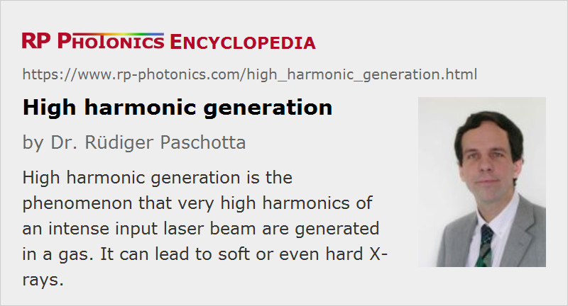

High Harmonic Generation
Acronym: HHG
Definition: the phenomenon that very high harmonics of an intense input laser beam are generated in a gas
More general terms: nonlinear frequency conversion
German: Erzeugung hoher Harmonischer
Categories: nonlinear optics, light pulses
How to cite the article; suggest additional literature
Author: Dr. Rüdiger Paschotta
When a very intense laser pulse is focused into a gas (usually at reduced pressure), strong nonlinear interactions can lead to the generation of very high odd harmonics of the optical frequency of the pulse, i.e., to an extreme form of nonlinear frequency conversion. This typically occurs at optical intensities of the order of 1014 W/cm2 or higher. Although only a tiny fraction of the laser power can be converted into higher harmonics, this output can still be useful for measurements down to wavelengths in the hard ultraviolet or even the X-ray spectral region. Such high harmonics may be used instead of synchrotron radiation. They are also used for generating pulses with attosecond durations in the extreme ultraviolet spectral region [2, 7, 8, 10, 9, 19]. Such attosecond pulses are now used for various fundamental studies e.g. of electronic motion in various kinds of materials. Even zeptosecond pulses (i.e., with durations well below one attosecond) might be possible [21].
In most cases, the pump source used contains a passively mode-locked laser and a regenerative amplifier based on titanium–sapphire crystals as the gain media. The repetition rate is then between a few hertz and a few kilohertz. Recently, however, a resonant cavity (enhancement resonator) has been used instead of an amplifier to increase the pulse energy to the level required for high harmonic generation [12]. This allowed for a much higher repetition rate of more than 100 MHz.
For the detection of weak high harmonics, one may use a microchannel plate followed by a phosphor layer and a CCD image sensor.
Although a detailed description of the physical processes behind high harmonic generation is complicated (and often relies on computationally intensive numerical quantum simulations), a number of basic aspects can be grasped with the “simple man's model” [1], describing how an electron under the influence of a strong electromagnetic field can leave its atom, be accelerated and later collide with the atom, thereby emitting harmonic radiation. More sophisticated models describe the quantum dynamics of the involved electrons.
For further dealing with the generated ultraviolet light, special ultraviolet optics are required. For the shorter wavelengths, the choice of available components is very restricted, and one can essentially use only reflective optics.
Suppliers
The RP Photonics Buyer's Guide contains 9 suppliers for high harmonic generation equipment. Among them:
Questions and Comments from Users
Here you can submit questions and comments. As far as they get accepted by the author, they will appear above this paragraph together with the author’s answer. The author will decide on acceptance based on certain criteria. Essentially, the issue must be of sufficiently broad interest.
Please do not enter personal data here; we would otherwise delete it soon. (See also our privacy declaration.) If you wish to receive personal feedback or consultancy from the author, please contact him e.g. via e-mail.
By submitting the information, you give your consent to the potential publication of your inputs on our website according to our rules. (If you later retract your consent, we will delete those inputs.) As your inputs are first reviewed by the author, they may be published with some delay.
Bibliography
| [1] | P. B. Corkum, “Plasma perspective on strong-field multiphoton ionization”, Phys. Rev. Lett. 71 (13), 1994 (1993) doi:10.1103/PhysRevLett.71.1994 (simple man's model) |
| [2] | P. Antoine et al., “Attosecond pulse trains using high-order harmonics”, Phys. Rev. Lett. 77 (7), 1234 (1996), doi:10.1103/PhysRevLett.77.1234 |
| [3] | Ch. Spielmann et al., “Generation of coherent X-rays in the water window using 5-femtosecond laser pulses”, Science 278, 661 (1997), doi:10.1126/science.278.5338.661 |
| [4] | T. Brabec and F. Krausz, “Intense few-cycle laser fields: frontiers of nonlinear optics”, Rev. Mod. Phys. 72 (2), 545 (2000), doi:10.1103/RevModPhys.72.545 |
| [5] | P. Salieres and M. Lewenstein, “Generation of ultrashort coherent XUV pulses by harmonic conversion of intense laser pulses in gases: towards attosecond pulses”, Meas. Sci. Technol. 12, 1818 (2001), doi:10.1088/0957-0233/12/11/309 |
| [6] | M. Drescher et al., “X-ray pulses approaching the attosecond frontier”, Science 291, 1923 (2001), doi:10.1126/science.1058561 |
| [7] | P. M. Paul et al., “Observation of a train of attosecond pulses from high harmonic generation”, Science 292, 1689 (2001), doi:10.1126/science.1059413 |
| [8] | A. Baltuška et al., “Attosecond control of electronic processes by intense light fields”, Nature 421, 611 (2003), doi:10.1038/nature01414 |
| [9] | R. Kienberger et al., “Atomic transient recorder”, Nature 427, 817 (2004), doi:10.1038/nature02277 |
| [10] | P. Agostini and L. F. DiMauro, “The physics of attosecond light pulses”, Rep. Prog. Phys. 67, 813 (2004), doi:10.1088/0034-4885/67/6/R01 |
| [11] | J. Seres et al., “Laser technology: source of coherent kiloelectronvolt X-rays”, Nature 433, 596 (2005), doi:10.1038/433596a |
| [12] | R. J. Jones et al., “Phase-coherent frequency combs in the vacuum ultraviolet via high-harmonic generation inside a femtosecond enhancement cavity”, Phys. Rev. Lett. 94 (19), 193201 (2005), doi:10.1103/PhysRevLett.94.193201 |
| [13] | C. Gohle et al., “A frequency comb in the extreme ultraviolet”, Nature 436, 234 (2005), doi:10.1038/nature03851 |
| [14] | F. Krausz et al., “Attosecond pulse generation and detection”, http://www.mpq.mpg.de/lpg/research/attoseconds/attosecond.html |
| [15] | C. Winterfeldt, C. Spielmann, and G. Gerber, “Colloquium: optimal control of high-harmonic generation”, Rev. Mod. Phys. 80, 117 (2008), doi:10.1103/RevModPhys.80.117 |
| [16] | D. C. Yost et al., “Efficient output coupling of intracavity high-harmonic generation”, Opt. Lett. 33 (10), 1099 (2008), doi:10.1364/OL.33.001099 |
| [17] | H. Ren et al., “Quasi-phase-matched high harmonic generation in hollow core photonic crystal fibers”, Opt. Express 16 (21), 17052 (2008), doi:10.1364/OE.16.017052 |
| [18] | O. H. Heckl et al., “High harmonic generation in a gas-filled hollow-core photonic crystal fiber”, Appl. Phys. B 97, 369 (2009), doi:10.1007/s00340-009-3771-x |
| [19] | F. Krausz and M. Ivanov, “Attosecond physics”, Rev. Mod. Phys. 81, 163 (2009), doi:10.1103/RevModPhys.81.163 |
| [20] | S. Hädrich et al., “Generation of μW level plateau harmonics at high repetition rate”, Opt. Express 19 (20), 19374 (2011), doi:10.1364/OE.19.019374 |
| [21] | C. Hernández-García et al., “Zeptosecond high harmonic keV X-ray waveforms driven by midinfrared laser pulses”, Phys. Rev. Lett. 111 (3), 033002 (2013), doi:10.1103/PhysRevLett.111.033002 |
| [22] | M. Chini, K. Zhao and Z. Chang, “The generation, characterization and applications of broadband isolated attosecond pulses”, Nature Photon. 8, 178 (2014), doi:10.1038/nphoton.2013.362 |
See also: supercontinuum generation, nonlinear frequency conversion
and other articles in the categories nonlinear optics, light pulses
|  |
If you like this page, please share the link with your friends and colleagues, e.g. via social media:
These sharing buttons are implemented in a privacy-friendly way!